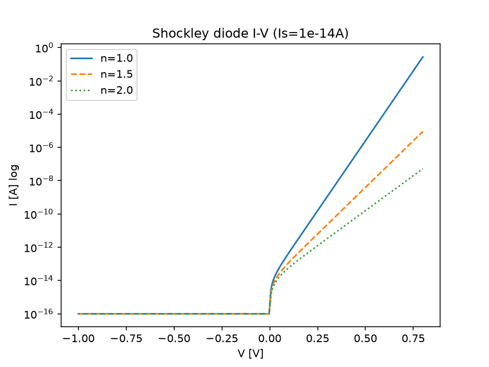
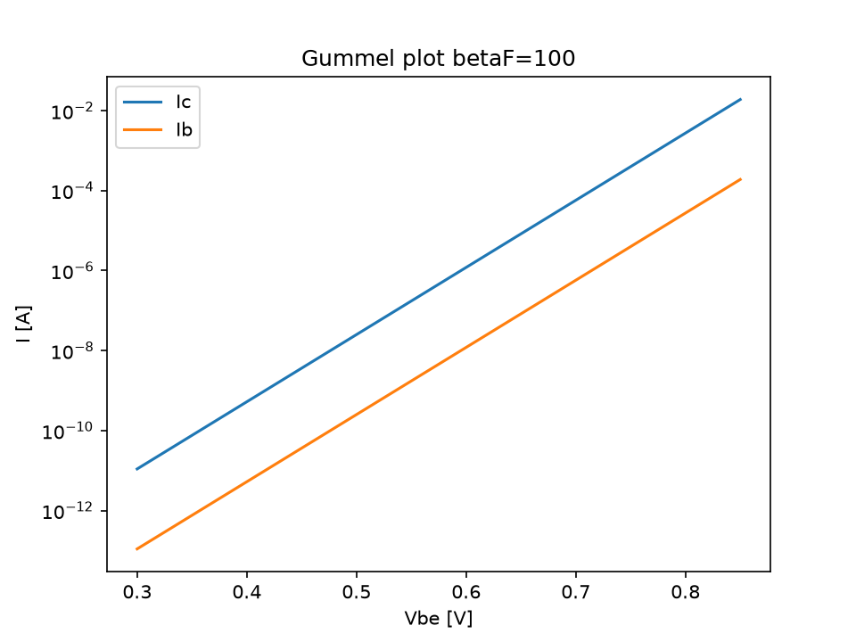
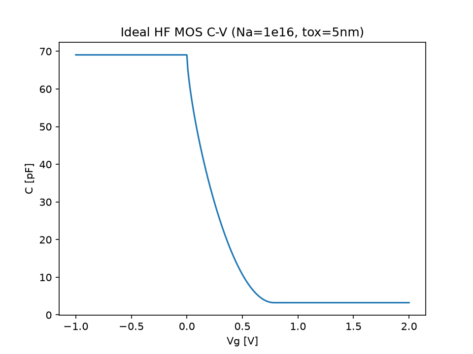
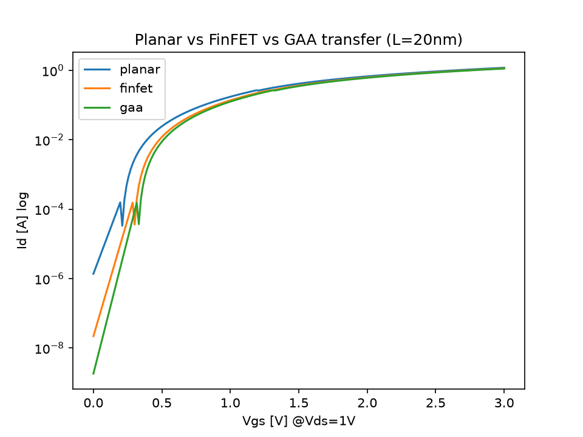
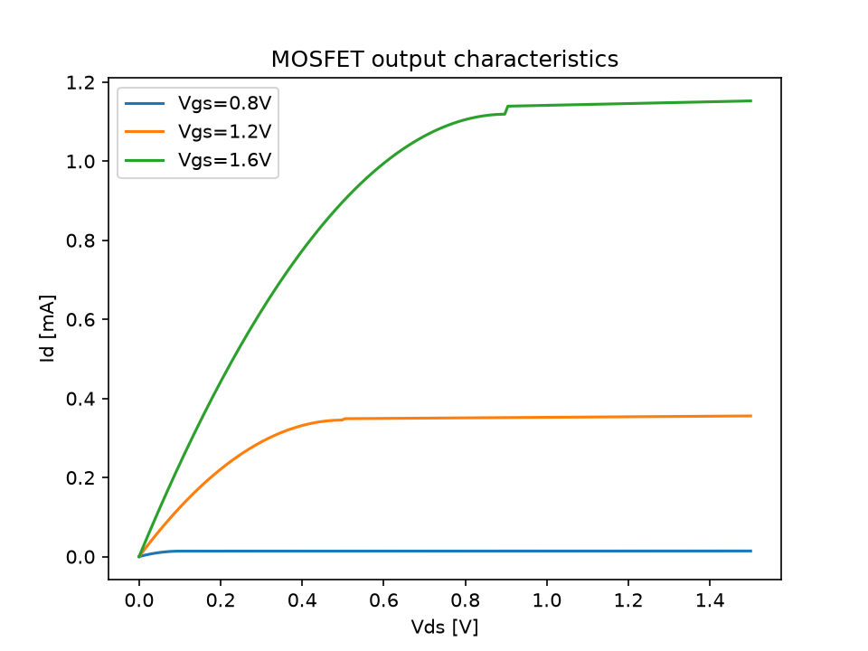
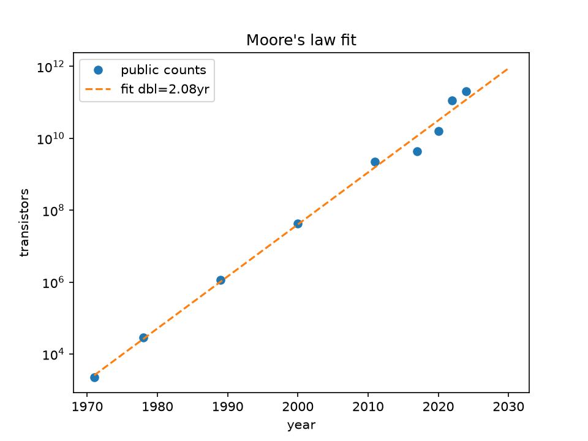
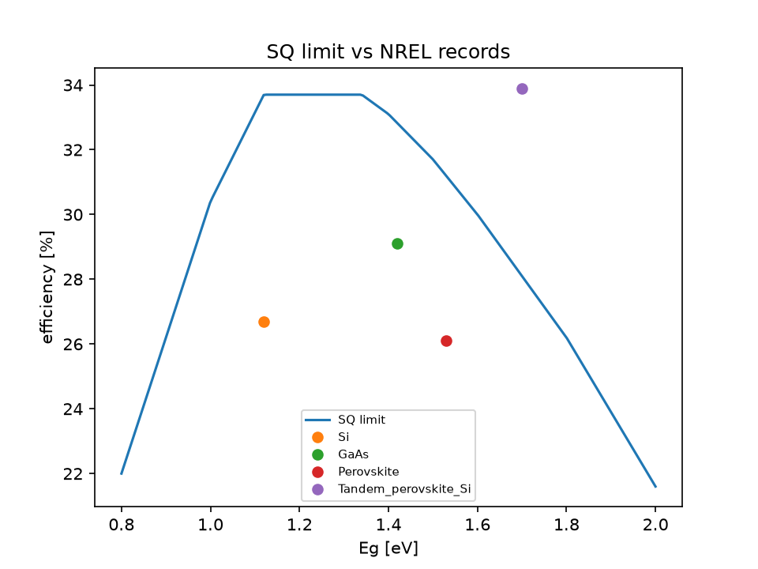

CEO summary (30 seconds): this repo turns the classic device course — diode → transistor → MOS → modern FinFET — into one command that proves every number. Students get intuition with proof. Engineers get copy-paste models for interviews and design reviews. Teachers get auto-graded labs. Managers get a portfolio artifact that runs the same on every machine.
Promise: if you can copy-paste 3 lines into a terminal, you can reproduce this entire page — anyone can do it, no background needed.
On GitHub: docs/demo.gif autoplays in the README; docs/demo.mp4 plays here with controls. Both are generated by docs/make_demo.py — delete them and re-run to prove it.
Pure silicon barely conducts. Sprinkle in a few foreign atoms (doping) and it wakes up: extra electrons (n-type) or missing electrons = holes (p-type). Everything else is just arranging these two crowds.
Glue p-type to n-type → a wall (0.71 V) builds itself. Push forward and current explodes exponentially (Shockley). Pull back and almost nothing flows — plus a tiny capacitance. That is a solar cell in reverse and an LED forward.
A thin base controls a huge collector flow: 1 unit in → 100 units out (β). Two diodes back-to-back plus clever geometry. Still the king of analog muscle.
Metal plate + oxide + silicon = a bucket for charge. Fill it (accumulation), empty the top (depletion → capacitance dips), overfill it (inversion → channel forms at 0.78 V). Cameras (CCD/CMOS) are just buckets passing water down a line.
Source → drain highway, gate = toll barrier. Below threshold: trickle (subthreshold, 83 mV/dec). Above: lanes open (linear) then traffic jam at the drain end (saturation, 2.33 mA in our test). Short highways leak — unless you wrap the gate around 3 sides (FinFET) or all 4 (GAA): 754× less leak.
Transistors doubled every 2.08 years from 2,300 (1971) to 208 billion (2024). Voltage stopped shrinking, so we went parallel (multicore/GPU). Sunlight has a ceiling too: 33.7% single-junction; today’s best silicon (26.7%) has 7 points left, and tandems (33.9%) already jumped over the fence.
docker compose up --build = tests + figures + benchmarksmake repro shortcut for laptops| You are… | Do this | You get |
|---|---|---|
| 🧑🎓 Student (zero background) | Read the beginner guide, run Quickstart, tweak doping in pn_junction.py | Intuition + numbers for exams and labs |
| 👩🏫 Teacher / TA | Assign B1–B11 as auto-graded lab; require summary.json: pass=true | Cheat-proof grading in one file |
| 💼 Job seeker (device / analog / PV / process) | Memorize KPI row + H1–H3; run arch comparison live in interview | “Show, don’t tell” portfolio moment |
| 🔧 Engineer (compact modeling) | Swap Level-1 for BSIM-CMG params; drop MESD JSON into data/ | Regression harness for model cards |
| 📊 Analyst / manager | Open §numbers + §hidden; quote Moore/SQ/market in roadmap slides | Board-ready facts with receipts |
| 🌞 Solar / sensor hacker | Extend SQ table + responsivity to your wavelength; compare to NREL CSV | Headroom math for techno-economics |
| 🤝 Contributor | Add B14 gate + test + figure; open PR with summary.json | MIT credit + green CI |
| Gate | What it means (plain English) | Measured | Healthy range | Status |
|---|---|---|---|---|
| B1 | Diode wall voltage (Na=Nd=1e16) | 0.7143 V | 0.60–0.85 | PASS |
| B2 | Diode leak when reverse-biased | 7.21e-15 A | 1e-16–1e-10 | PASS |
| B3 | Ideality recovery (we hide n=1, code finds it) | 1.000 | 0.95–1.05 | PASS |
| B4 | Empty-zone width at 0 V | 0.4298 µm | 0.3–1.2 | PASS |
| B5 | BJT faucet gain β | 100.0 | 90–115 | PASS |
| B6 | MOS bucket spill voltage | 0.7848 V | 0.4–1.2 | PASS |
| B7 | MOSFET highway max current | 2.334 mA | 0.1–5 mA | PASS |
| B8 | Steepness of turn-on (lower = better) | 83.34 mV/dec | 80–90 | PASS |
| B9 | Moore doubling speed 1971–2024 | 2.08 yr | 1.5–3.0 | PASS |
| B10 | Sunlight ceiling (best bandgap) | 33.7% | 32–35% | PASS |
| B11 | Sensor current per watt (850 nm) | 0.6856 A/W | 0.60–0.75 | PASS |
| B12/B13 | Real chip stocks (2026-10-03) | NVDA 233.95 · TSM 472.78 USD | sane | PASS |
Same L=20nm: SS 95.24 → 74.41 → 64.29 mV/dec; Ioff 1.375µA → 21.9nA → 1.82nA; Ion/Ioff 1.27e5 → 6.25e6 → 6.90e7. Wrapping the gate buys two orders of leakage for ~30% drive. That is a design rule, not a slogan.
Doubling: all-years 2.08yr, pre-2006 2.05yr, post-2006 1.91yr. Voltage froze (power wall) but counts sped up via cores/GPUs/tiles (M1-Ultra 114B, Blackwell 208B). Re-fit from data/moore_transistor_counts.csv in one line.
Records vs ceiling: Si 26.7/33.7 (7.0pp left), GaAs 29.1/32.8, perovskite 26.1/31.2; tandem 33.9% > 33.7% peak. Single junctions are 4–7 points from done; the future is stacked. No fab needed to prove it.







git clone <this-repo> && cd semiconductor-devices-principles-phd-2026
docker compose up --build
# no docker? pip install -r requirements.txt
# pytest -q tests → 8 passed
# python experiments/run_all.py → 7 figures
# PYTHONPATH=src python benchmarks/benchmark_suite.py → ALL PASSPYTHONPATH=src python3 -c "
from sdp.pn_junction import built_in_potential as Vbi
print(Vbi(1e16,1e16)) # 0.7143
print(Vbi(1e18,1e15)) # higher — why?
"PYTHONPATH=src python3 -c "
from sdp.mosfet import mosfet_ids as Id
for n,d in [(1.6,.15),(1.25,.06),(1.08,.03)]:
print(float(Id(0.0,1.0,W_um=10,L_um=0.02,
tox_nm=1.0,mu0=300,Vth=0.35,n_sub=n,dibl=d)))
"PYTHONPATH=src python3 -m sdp.live_verify
# used_live=true when online; snapshot otherwise
cat benchmarks/results/live_market.json| Week | Topic | Open this | Gate |
|---|---|---|---|
| 1 | Intrinsic Si, ni(T) | src/sdp/constants.py | — |
| 2 | Doping, PN wall, depletion | src/sdp/pn_junction.py | B1, B4 |
| 3–4 | Diode model + design (Cj/Cd) | same + ideality_from_iv | B2, B3 |
| 5 | Photo / solar / LED / Schottky | src/sdp/opto.py | B10, B11 |
| 6–7 | BJT + switching model | src/sdp/bjt.py | B5 |
| MOS-1/2 | Charges, Vth, C-V, CCD/CMOS camera | src/sdp/mos.py | B6 |
| MOS-3/4 | MOSFET + corrections | src/sdp/mosfet.py | B7, B8 |
| MOS-5/6 | Scaling, FinFET/GAA/2D | src/sdp/scaling.py + arch table | B9, H1 |
| Live | Why scaling pays | src/sdp/live_verify.py | B12, B13 |
No. Start at the beginner guide. Copy the 3 quickstart lines. Change one number, re-run, watch the figure move. That is the whole method.
First build downloads Python + numpy (~2 min). After that it is seconds. No-Docker path works identically.
Everything except the live-price re-fetch works offline; the suite falls back to the pinned 2026-10-03 snapshot and still passes physics.
Attach benchmarks/results/summary.json (must say "pass": true) + one regenerated figure + PAPER.md. That is the credential.
Add a B14_* window in thresholds.json, a test in tests/, and a figure in experiments/run_all.py. If the suite stays green, your claim is real.
MIT — use in homework, interviews, products. Keep the LICENSE file.